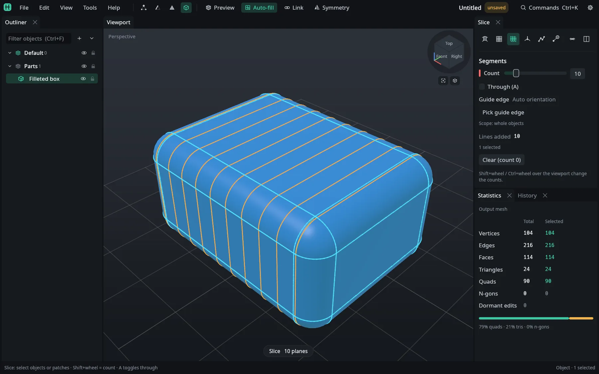

Connect C
Lines that follow how a face bends: along a cylinder, across a fillet, both ways on a torus. Neighbouring fillets join into one continuous line.
Lay edge lines on the exact surfaces of a STEP or IGES model. newtopo fills the rest with quads and exports game-ready meshes.

Long, thin triangles with no edge flow shade badly and take days to fix by hand. newtopo starts from the B-rep instead, so every vertex sits on the real surface.
Open STEP (AP203, AP214, AP242) or IGES. Names, layers, colours and assemblies come along. The CAD model stays read-only, and every CAD face starts as one polygon.
Place lines by count with Connect, Surface Grid and Slice, or one at a time with Iso and Cut. Each line lies on the real surface and splits the face it crosses.
Anything still bigger than a quad is split into quads and triangles, using only the vertices you already have. Auto-fill never adds points and never blocks an export.
Remove, collapse or weld what you don't want, then press V to see exactly what export will write. Batch-rename, run a quick UV unwrap, and send it out.
96 quads
Lines come from rules: a Connect count on a fillet, a grid on a face, a set of slices, one iso line, one cut path. Rules sit on top of the read-only CAD model, so you can change any of them later.
Change a count and the mesh regenerates on the spot. Manual welds, collapses and removed edges that still apply are kept, and everything is undoable.
.ntopo and reopen without the original CAD file.Every tool is live, undoable, and aware of Link and Symmetry. Every shortcut can be rebound, and a command palette (CtrlK) finds the rest.
Lines that follow how a face bends: along a cylinder, across a fillet, both ways on a torus. Neighbouring fillets join into one continuous line.
A U by V grid of exact iso lines on any face, flat or curved. It stops cleanly at holes.
Evenly spaced cuts across a body, like a stack of planes. Around a shared axis they turn radial.
One exact line where you click. Through mode carries it across smooth neighbours; split mode divides a face into parts.
Click a path across faces. Every point lands on the exact surface, and crossed edges get new vertices.
Delete removes edges, AltC collapses, W welds one vertex onto another. CAD outlines stay put, and anything that would break the mesh is refused with a reason.
Link finds identical faces in a body, so lines on one hole appear in every matching hole. Symmetry mirrors your work across X, Y or Z.
.glb, triangulated, vertices split at hard edges.Every format carries hard edges from the CAD model's sharp edges, smooth normals taken from the exact surface, object names, layers as hierarchy, materials from CAD colours, units and up axis.
Install the add-on once and press Send. The mesh arrives with its names, sharp edges and UVs, and layers become collections. Sending again replaces the object. It talks over a local connection only, with a token you paste in once. Maya and 3ds Max add-ons are planned.
newtopo-cli runs everything the app does from a terminal: inspect a file, replay a recorded script, check a scene, export and render. Use it in build pipelines, batch jobs and CI.
The app can record what you do as a JSON script, so a cleanup you did once can run again on the next revision of the part.
# bodies, faces, surface types, layers
$ newtopo-cli info bracket.step
# replay a recorded script onto a new revision
$ newtopo-cli run cleanup.json -o bracket.ntopo
# check invariants; non-zero exit on failure
$ newtopo-cli validate bracket.ntopo
$ newtopo-cli export bracket.ntopo --format fbx -o bracket.fbx --up y
$ newtopo-cli render bracket.ntopo --view iso --preview -o bracket.pngVersion 0.1 is free and open source under the MIT licence. Expect rough edges, and expect your OS to ask before it runs an unsigned app.
newtopo is a desktop app for Windows, macOS and Linux. Open this page on your computer to download it.
Windows Installer for Windows 10 and 11, x64 Download for Windows Your system macOS.dmg for Apple silicon. Best effort during early access.
Download for macOS
Your system
Linux
x86-64 as AppImage, .deb or .tar.gz. Wayland and X11.
Download for Linux
Your system
Windows 10 or 11, x64
Linux x86-64, Wayland or X11
macOS 11 or later on Apple silicon
A GPU with Vulkan, DirectX 12 or Metal. Integrated graphics are fine.
A 4-core CPU and 16 GB of memory is the baseline it is tuned for.